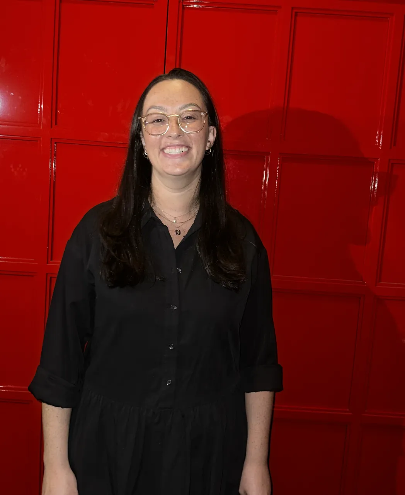
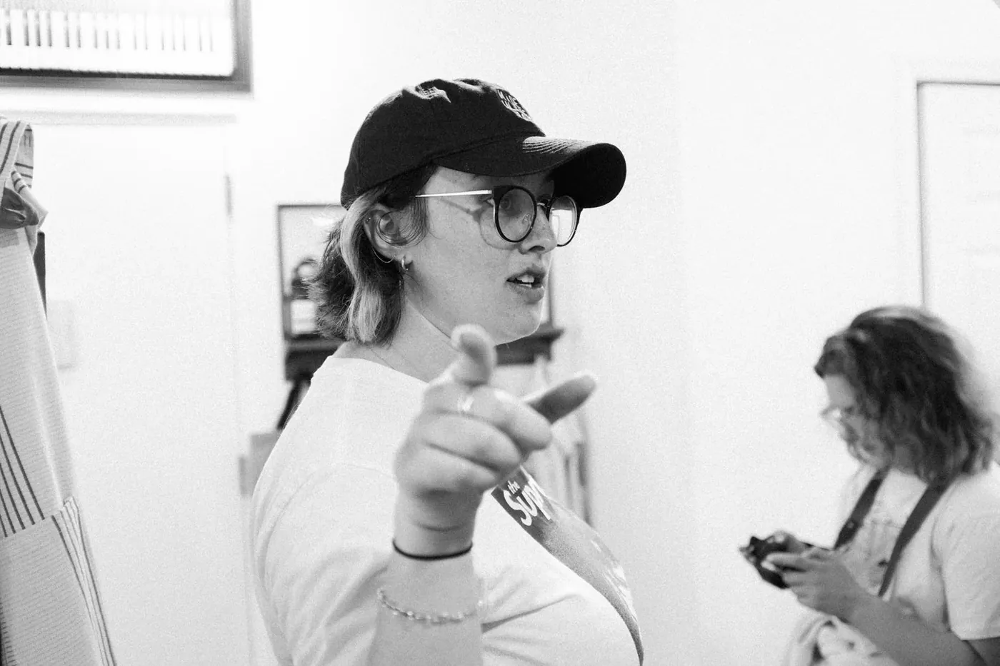
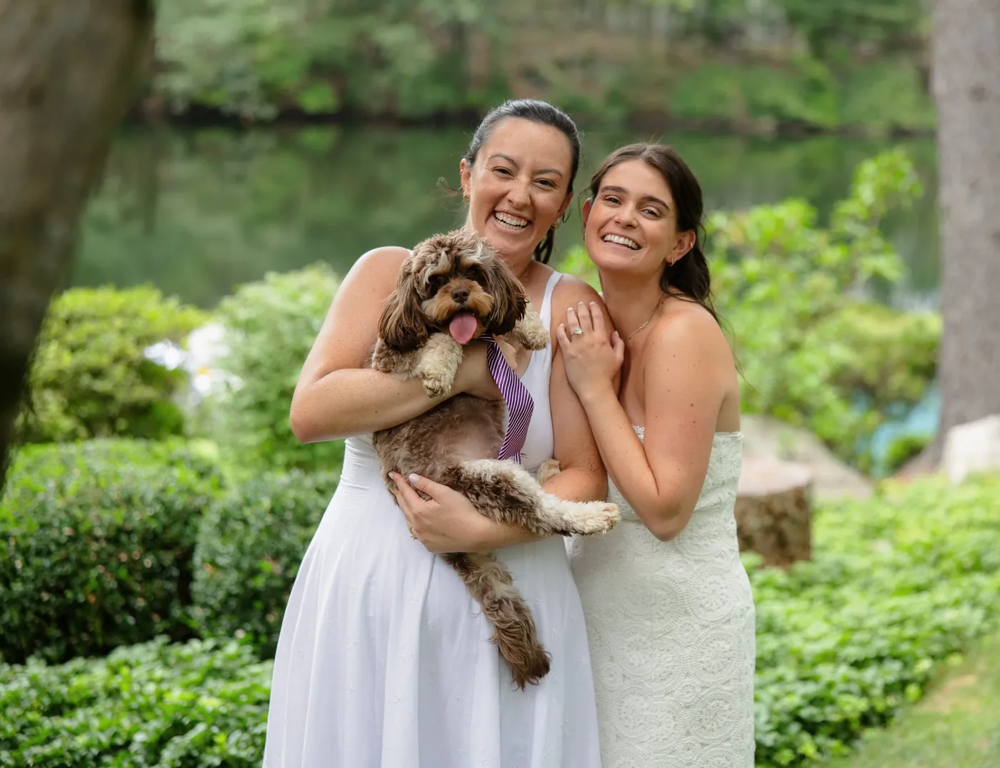
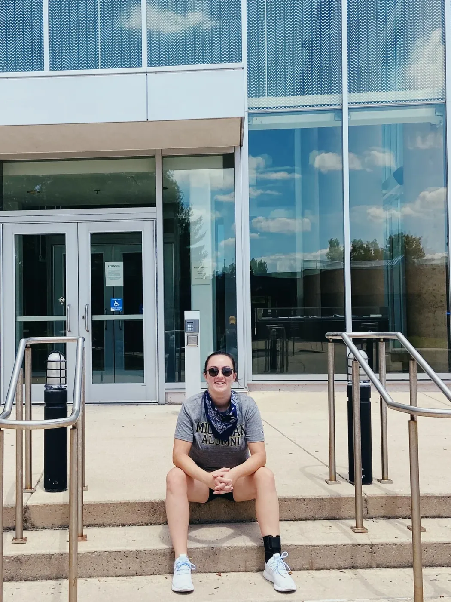
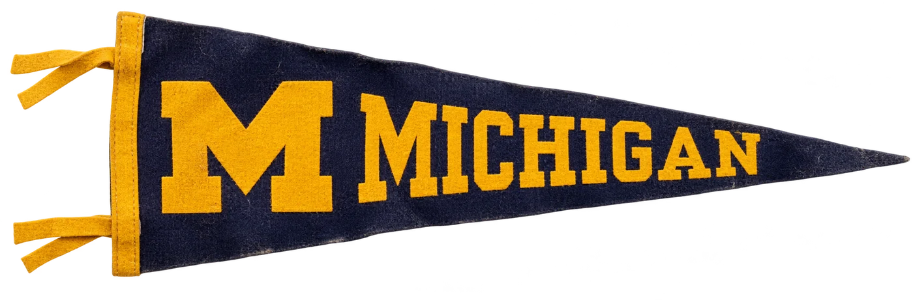

Get to know Sydney!
Production Manager. Stage Manager. Creator.
Well hello there!
I’m Sydney and I am so glad you are here.

I’m a New York–based production manager and stage manager who has spent the last six years working throughout the Off-Broadway and NYC theatre scene. I’m passionate about supporting new, thoughtful work and collaborating with artists to bring ambitious ideas to life.

Most recently, I’ve served as a Production Manager across a wide range of productions, from opera and musical theatre to workshops, children’s theatre, and large-scale live events. My work lives at the intersection of creativity and logistics: managing budgets, coordinating teams, and making sure every moving piece of a production works together.
I often act as the central communicator between departments, keeping track of the smallest details while also protecting the big-picture vision of a project.


Having worked on many sides of the industry, including producing, directing, stage management, and production management, I’ve developed a whole-picture understanding of how a production comes together and how best to support the artists and teams creating it.
I’m comfortable leading projects independently, but what excites me most is being part of a collaborative team building meaningful work together.

Currently, I’m an Associate with Iron Bloom Creative Production, where I serve as the in-house Production Manager for Cherry Lane Theater while collaborating on projects ranging from theatre and festivals to large-scale live experiences.
In my career, I’ve had the chance to work with organizations including Ars Nova, Spellbound Theatre, NYC Children’s Theater, Lincoln Center, Little Island, The Public Theater, and the NBA.

I’m a proud University of Michigan alum (Go Blue!) and am endlessly motivated by the passion that drives live performance - supporting artists, solving problems, and helping create spaces where great ideas can grow from the page to the stage.